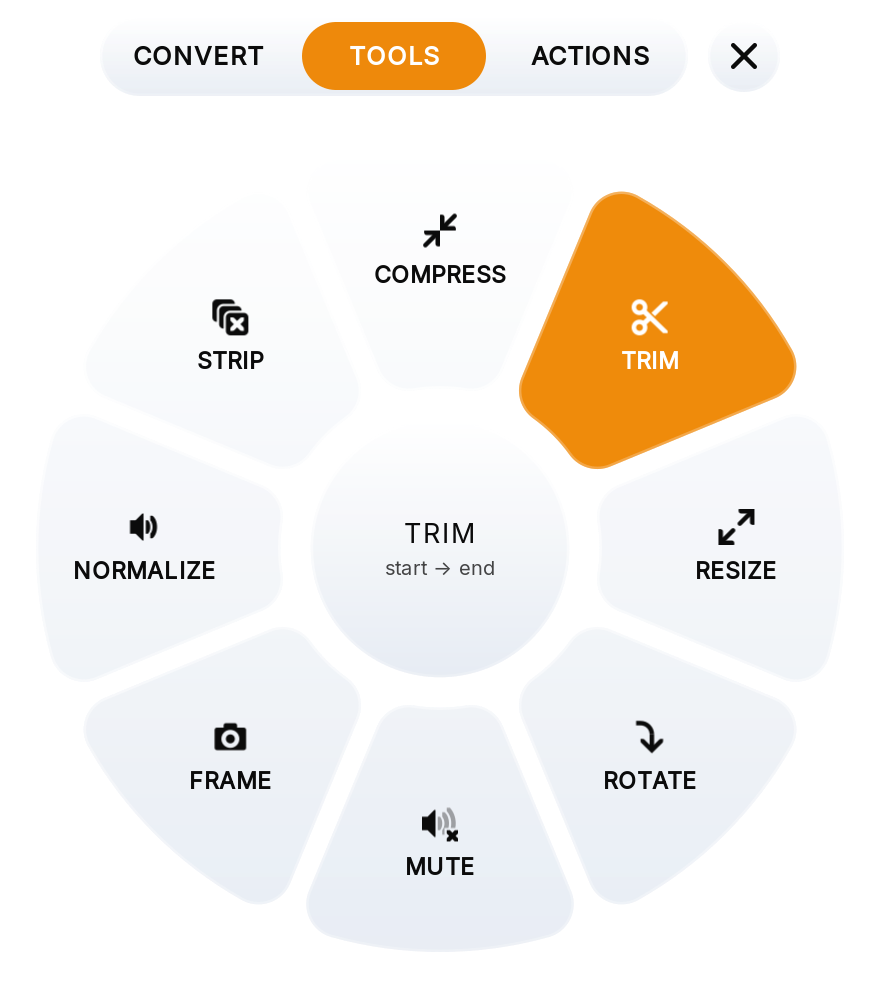
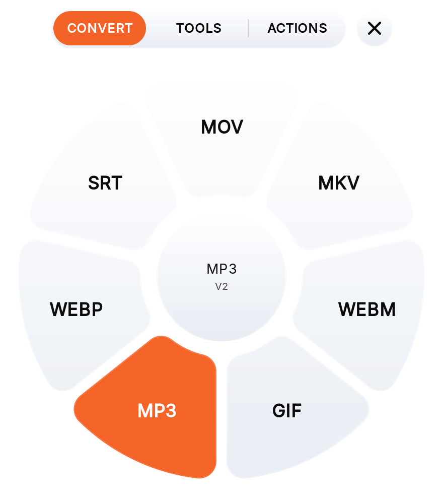
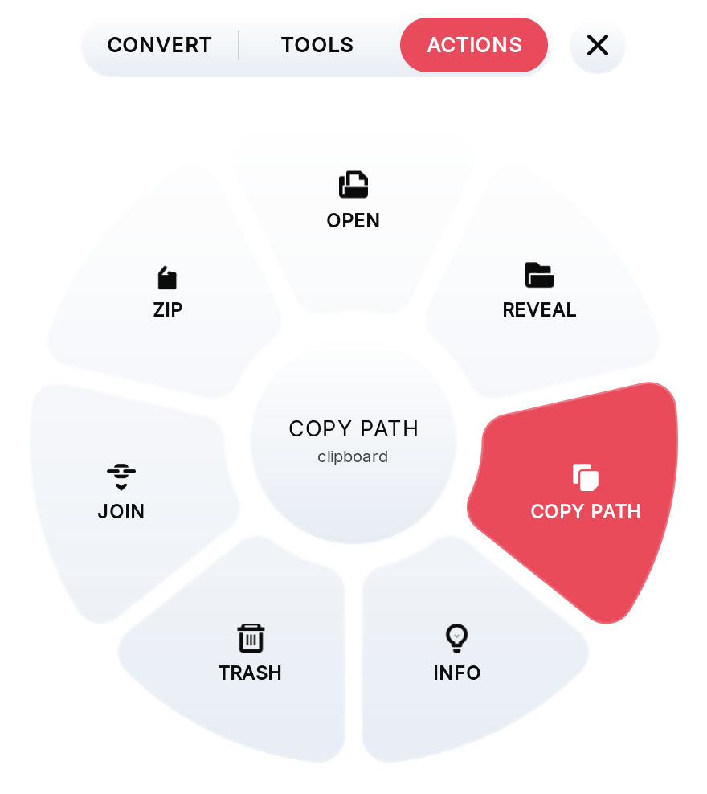

فایل را روی چرخ بکشید و یکی از قاچها را انتخاب کنید. تبدیل، کمحجم کردن، کوتاه کردن، باز کردن فایل فشرده: ویدیو، صدا، عکس، PDF، سند و فایل فشرده، همه روی کامپیوتر خودتان. رایگان و متنباز، مثل Tangerine برای مک، ولی روی ویندوز و لینوکس هم.

موقع کشیدن فایل Shift، Ctrl یا Alt را نگه دارید، یا فایل را روی یکی از تبهای بالای چرخ نگه دارید؛ قاچها قبل از رها کردن فایل عوض میشوند.

تبدیل فایل به فرمتی دیگر. چرخ فقط فرمتهایی را نشان میدهد که به فایل میخورند.
کمحجم کردن، کوتاه کردن، تغییر اندازه، چرخاندن، باز کردن فایل فشرده؛ فرمت فایل عوض نمیشود.

باز کردن، نشان دادن در پوشه، کپی مسیر، زیپ کردن، چسباندن چند فایل به هم یا انداختن در سطل زباله.
نتیجه کنار فایل اصلی با اسمی روشن ذخیره میشود و هیچ فایلی را بازنویسی نمیکند. هر قاچ فقط وقتی نشان داده میشود که ابزار لازمش نصب باشد.
چرخی گرد و شفاف که روی پنجرههای دیگر میماند و منتظر یک فایل است.
تم روشن و تیره، و شیشهی شفاف، معمولی یا کدر. کلیکهای اطراف چرخ به پنجرههای زیرش میرسند.
Ctrl Alt N چرخ را از هر جایی نشان میدهد و پنهان میکند. در تنظیمات میتوانید عوضش کنید.
PNG همان PNG میماند، WAV همان WAV و MP4 همان MP4؛ فقط کمحجمتر. FLAC و TIFF بدون افت کیفیت.
چند فایل را با هم بیندازید تا همه تبدیل شوند، یا ویدیوها، آهنگها و PDFها را پشت هم بچسبانید.
حلقهای دور مرکز چرخ همراه با کار ffmpeg پر میشود و وقتی نتیجه آماده شد خبرتان میکند.
با کلیدهای جهت قاچ را انتخاب کنید، Enter اجرایش میکند و Esc فایل را پاک میکند.
Tangerine و FanDrop تبدیل فایل را به سادگی کشیدنش روی یک چرخ کردند، ولی فقط روی مک. نارنج همین حرکت را به ویندوز ۱۰ و ۱۱، لینوکس (اوبونتو، دبیان و دسکتاپهای گنوم) و مک میآورد، رایگان.
نصبکنندهای که همهچیز را همراه دارد: پایتون، GTK و ffmpeg. به دسترسی ادمین نیازی ندارد.
مخزن apt برای اوبونتو و دبیان، تا آپدیتها همراه بقیهی سیستم برسند.
فایل DMG برای مکهای اپل سیلیکون، یا Homebrew روی هر مکی.
مبدلهای آنلاین اول باید فایل شما را روی سرورشان داشته باشند. نارنج ffmpeg، LibreOffice و بقیه را همان جایی اجرا میکند که فایلهایتان هستند.
آپلود، انتظار، دانلود، و امید به اینکه نسخهی روی سرورشان پاک شود. محدودیت حجم، صف و تبلیغ.
بیندازید و تمام. بدون حساب کاربری، بدون آپلود، بدون محدودیت حجم و بدون اینترنت.
نسخهی 1.4.0. نسخههای قبلی در صفحهی ریلیزها هستند.
xattr -dr com.apple.quarantine /Applications/Narenj.appsudo install -d -m 0755 /etc/apt/keyrings
curl -fsSL https://hastashakiba.github.io/narenj/narenj-archive-keyring.gpg | sudo tee /etc/apt/keyrings/narenj.gpg >/dev/null
echo "deb [signed-by=/etc/apt/keyrings/narenj.gpg] https://hastashakiba.github.io/narenj stable main" | sudo tee /etc/apt/sources.list.d/narenj.list
sudo apt update && sudo apt install narenj
narenj --setupیک بار از حساب کاربری خارج و دوباره وارد شوید تا افزونهی گنوم که چرخ را
همیشه رو نگه میدارد بارگذاری شود. آپدیتها با sudo apt upgrade میرسند.
brew tap hastashakiba/narenj https://github.com/HAstaShakiba/narenj
brew install narenj
narenjHomebrew خودش GTK، پایتون، ffmpeg، pandoc و poppler را نصب میکند. برای
فایلهای آفیس brew install --cask libreoffice را هم اجرا کنید.
| Ctrl Alt N | نشان دادن یا پنهان کردن چرخ (در مک Control Option N) |
| Shift / Ctrl / Alt | چرخ تبدیل، ابزارها یا کارها، حتی موقع کشیدن فایل |
| ← → و Enter | انتخاب قاچ و اجرای آن |
| Esc | پاک کردن فایل انتخابشده |
| Ctrl , | تنظیمات |
Tangerine فقط برای مک ساخته شده است. نارنج همان روش را دارد، یعنی کشیدن فایل روی چرخی از تبدیلها، و روی ویندوز ۱۰ و ۱۱، لینوکس (اوبونتو، دبیان و دسکتاپهای گنوم) و مک اجرا میشود.
بله. نارنج رایگان و متنباز با مجوز MIT است؛ بدون حساب کاربری، بدون محدودیت و بدون تبلیغ.
نه. همهی تبدیلها روی کامپیوتر خود شما با ffmpeg، LibreOffice، pandoc و poppler انجام میشود و به اینترنت نیازی ندارد.
ویدیو (MP4، MOV، MKV، WebM، GIF)، صدا (MP3، M4A، WAV، FLAC، OGG، Opus)، عکس (PNG، JPG، WebP، BMP، TIFF، ICO، SVG)، PDF، سند (DOCX، ODT، RTF، TXT، Markdown، HTML)، اسلاید، صفحهگسترده، EPUB، زیرنویس (SRT، VTT، ASS) و فایل فشرده (ZIP، TAR، GZIP، RAR، 7z). فهرست کامل را ببینید.
نه. نارنج پروژهای مستقل است که از آنها الهام گرفته و با سازندگانشان ارتباطی ندارد.